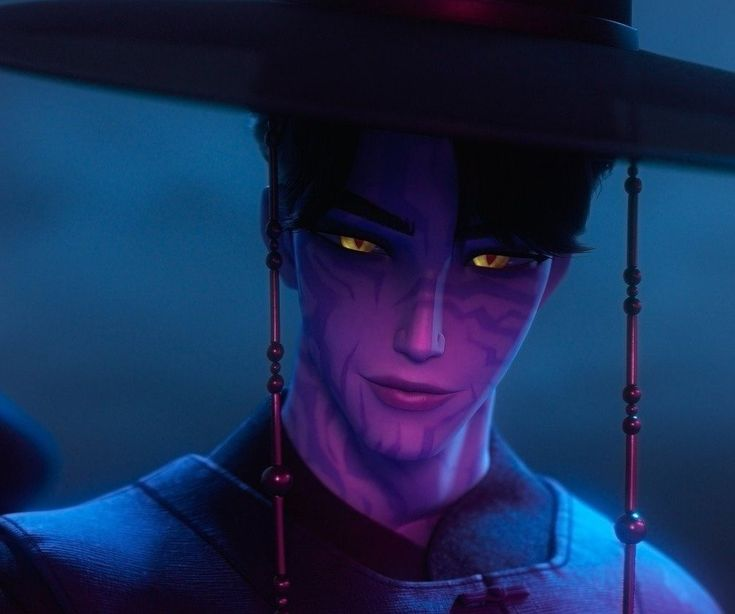

Jinu is one of the central characters in K-pop Demon Hunters and the leader of the Saja Boys. Before becoming a demon, he was an ordinary young man who desperately wanted to provide a better life for his mother and younger sister. In pursuit of that dream, he made a deal with Gwi-Ma, hoping to free his family from poverty. However, the bargain had devastating consequences. Jinu became a demon, his family lost everything, and he spent years blaming himself for abandoning the people he loved most.
In the present day, Jinu serves Gwi-Ma and proposes a plan to weaken the Honmoon by creating the highly successful boy group Saja Boys. In exchange, he asks Gwi-Ma to erase his memories of his family, believing that forgetting his past will free him from guilt and regret.
Everything begins to change when he meets Rumi, a demon hunter who is secretly half demon herself. Unlike others, Rumi sees Jinu as more than a monster or an enemy. Around her, the influence of Gwi-Ma weakens, and for the first time in years Jinu finds hope, understanding, and genuine connection. Their growing bond leads him to question the path he has chosen and the sacrifices he has made.
In the end, Jinu chooses to protect Rumi and gives up his own soul to save her. His story is one of guilt, redemption, sacrifice, and the search for forgiveness.